670 — Hội chứng tiểu phế quản tắc nghẽn (BOS) sau ghép tế bào gốc / ghép phổi ở trẻ: ứ khí thì THỞ RA, FEV₁ & tiêu chuẩn NIH 2014 / Bronchiolitis obliterans syndrome (BOS) after HSCT & lung transplant in children
Tags: pattern:bos pattern:u-khi pattern:viem-tieu-phe-quan vung:phe-quan vung:phoi score:NIH-2014 score:ISHLT-CLAD protocol:HRCT-thi-tho-ra protocol:spirometry protocol:theo-doi-sau-ghep
Mức chắc chắn (certainty): ca nguyên văn (verbatim case) — trục bài là ca trẻ 5 tuổi BOS sau ghép tế bào gốc tự thân (auto-HSCT) của Ogawa N et al., Cureus 2026 (PMC12936193, CC BY); các phần tiêu chuẩn chẩn đoán, phân độ và điều trị là tổng hợp y văn (literature synthesis) — ghi rõ nguồn từng số ở sources.md.
1. Tổng quan bệnh học – cơ chế hình ảnh
- BOS là gì: viêm–xơ tiến triển khu trú ở tiểu phế quản tận cùng và tiểu phế quản hô hấp (bronchiolitis obliterans — OB) làm hẹp/tắc đường thở nhỏ < 2 mm. Đây là biến chứng phổi mạn KHÔNG nhiễm trùng muộn (late-onset non-infectious pulmonary complication) sau:
- ghép tế bào gốc (HSCT) — biểu hiện phổi của bệnh mảnh ghép chống chủ mạn (chronic graft-versus-host disease, cGVHD), chủ yếu sau ghép đồng loài (allo-HSCT);
- ghép phổi — nằm trong rối loạn chức năng mảnh ghép phổi mạn (chronic lung allograft dysfunction, CLAD), thể BOS.
- Sinh lý bệnh: tế bào T của người cho nhận diện dị nguyên phổi → tổn thương biểu mô tiểu phế quản → sửa chữa loạn nhịp, xơ hóa quanh tiểu phế quản → tắc nghẽn đường thở nhỏ CỐ ĐỊNH, không hồi phục. Nhóm KHÔNG do miễn dịch đồng loài (như auto-HSCT) lại khởi phát từ tổn thương độc tế bào do hóa trị liều cao (thiotepa, melphalan, busulfan) giải phóng mẫu phân tử liên quan tổn thương (damage-associated molecular patterns, DAMPs), rồi bị khuếch đại bởi quá trình tái lập miễn dịch lúc mọc mảnh ghép — đây là lý do BOS có thể gặp cả sau auto-HSCT (hiếm, nhưng đã có báo cáo ở người lớn và nay ở trẻ).
- TẠI SAO hình ảnh lại là "ứ khí" chứ không phải thấy trực tiếp tổn thương: tiểu phế quản < 2 mm dưới ngưỡng phân giải của CT; thành tiểu phế quản tắc không nhìn thấy được. Ta chỉ thấy HẬU QUẢ của van một chiều trong lòng ống: khí vào được, ra khó → ứ khí phía sau (air trapping), biểu hiện mosaic attenuation (mật độ phổi xen kẽ sáng–tối), tăng thể tích phổi (hyperinflation) và hệ quả trên đường thở lớn hơn (dày thành phế quản, giãn phế quản). Vì vậy ứ khí CHỈ lộ rõ khi chụp thì THỞ RA (expiratory CT) — trên thì hít vào có thể chỉ là mosaic mờ nhạt hoặc bình thường.
- Vì sao mosaic giảm tỷ trọng là ứ khí chứ không phải thiếu máu: vùng ứ khí căng giãn chèn ép mạch máu thứ phát (constrictive), nên vùng sáng vừa "nhiều khí" vừa "thưa mạch" — khác mosaic do bệnh mạch phổi (mọi vùng đều chứa đầy khí, chỉ khác tưới máu). Chìa khóa phân biệt là thì thở ra và bối cảnh (sau ghép → ưu tiên BOS).
- Ngưỡng định lượng quan trọng (bắt buộc nhớ):
- Tiêu chuẩn NIH 2014 (chẩn đoán BOS sau HSCT): FEV₁ < 75% dự đoán VÀ giảm ≥ 10% trong < 2 năm**; albuterol **không đưa FEV₁ trở về > 75% dự đoán và độ giảm tuyệt đối sau thuốc vẫn ≥ 10%; cộng ứ khí trên CT thì thở ra HOẶC dày thành đường thở nhỏ / giãn phế quản trên HRCT (hoặc bằng PFT: RV > 120% dự đoán hay tỷ lệ RV/TLC vượt 90% CI); và không có nhiễm trùng hoạt động. Với trẻ em và người già dùng giới hạn dưới của bình thường (lower limit of normal, LLN) theo NHANES III chứ không dùng mốc 75% cứng.
- CLAD sau ghép phổi (ISHLT 2019): giảm FEV₁ tuyệt đối > 20% so với nền = trung bình 2 giá trị tốt nhất sau ghép, đo cách nhau ≥ 3 tuần; khả năng (possible) < 3 tuần, có thể (probable) ≥ 3 tuần, chắc chắn (definite) ≥ 3 tháng; giảm ≥ 10% = "CLAD tiềm tàng" (potential CLAD).
- Dịch tễ: BOS gặp ở 5–10% người nhận allo-HSCT, tăng tới ~15% khi có cGVHD ngoài phổi; sống 5 năm chỉ 10–20% sau khi BOS khởi phát. Đoàn hệ đơn trung tâm 678 bệnh nhân (Savaş EM et al., J Clin Med 2026, PMC13665736): 28 ca (4,1%) đạt tiêu chuẩn NIH; FEV₁ 97,5% → 47,5%, DLCO 72% → 35%; sống trung vị từ lúc chẩn đoán BOS chỉ 27,2 tháng.
- Sau ghép phổi trẻ em: sống trung vị 6 năm; CLAD chiếm ~40% ca tử vong sau năm đầu; BOS đã chẩn đoán có sống trung vị 3–5 năm (thể RAS nặng hơn: 6–18 tháng).
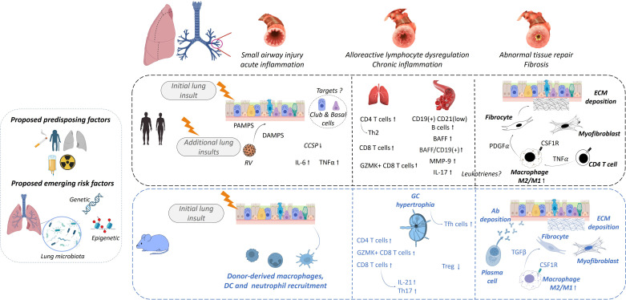
Sơ đồ sinh lý bệnh BOS sau ghép tế bào gốc: tổn thương biểu mô → viêm → sửa chữa loạn nhịp → xơ hóa quanh tiểu phế quản. Nguồn: Cheng GS et al., Am J Respir Crit Care Med 2025 (PMC12412426), CC BY-NC-ND 4.0 — nguyên bản, không chỉnh sửa.2. Mẫu hình + chẩn đoán phân biệt theo vị trí (gamut)
- Mẫu hình cốt lõi: bệnh nhân sau ghép ho khan, khò khè, khó thở khi gắng sức + tắc nghẽn đường thở nhỏ cố định + mosaic/ứ khí thì THỞ RA, KHÔNG có mờ phổi dai dẳng.
- Gamut theo CƠ CHẾ của mosaic giảm tỷ trọng (3 cơ chế — Argon "cùng hình, khác gốc"):
- Bệnh đường thở nhỏ (ứ khí) — vùng sáng căng giãn, mạch thưa thứ phát; lộ rõ khi thở ra. Gồm BOS (sau ghép), PIBO/Swyer–James (sau nhiễm trùng, bài 614), viêm tiểu phế quản hút sặc, viêm tiểu phế quản tăng sản tế bào nội tiết thần kinh lan tỏa (DIPNECH).
- Bệnh mạch máu phổi (mosaic do tưới máu) — thuyên tắc phổi mạn / tăng áp phổi; vùng thưa mạch vẫn chứa đầy khí, KHÔNG tệ hơn khi thở ra.
- Bệnh nhu mô xâm nhập (mosaic do kính mờ) — viêm phổi quá mẫn, viêm phổi kẽ, tổn thương thâm nhiễm.
- Gamut theo BỐI CẢNH sau ghép ở trẻ:
- Sau ghép tủy (allo): BOS do cGVHD (bài này), viêm phổi do virus sau ghép (RSV, parainfluenza, adenovirus — vi rút cận myxo/adenovirus có thể để lại BOS tới 40% ở người nhận ghép phổi), hội chứng viêm phổi vô căn (idiopathic pneumonia syndrome, IPS), viêm phổi tổ chức (organizing pneumonia).
- Sau ghép phổi: 4 thể CLAD — BOS (tắc nghẽn, không mờ phổi dai dẳng), RAS (hạn chế, TLC giảm ≥ 10%, có mờ phổi dai dẳng; ~30% CLAD), hỗn hợp (mixed), không xác định (undefined).
- Sau nhiễm trùng nặng (adenovirus, sởi, Mycoplasma): PIBO → Swyer–James (bài 614, 669).
- Mnemonic phân biệt nhanh "BAO KHÔNG ĐỔI thì là xơ": BOS sau ghép + tắc nghẽn CỐ ĐỊNH (không đáp ứng giãn phế quản, không hồi phục theo thời gian) = xơ hóa tiểu phế quản, khác hen (hồi phục) và khác viêm tiểu phế quản cấp (tự khỏi).
3. Bảng so sánh phân biệt (ma trận đối chiếu)
| Thực thể (entity) | Hình ảnh điển hình | Chốt vào (rule-in) | Chốt loại (rule-out) | Gợi ý xác nhận |
|---|---|---|---|---|
| BOS sau ghép tủy (cGVHD phổi) | HRCT: mosaic + ứ khí thì THỞ RA, dày thành phế quản, ± giãn phế quản; X-quang có thể bình thường | Sau allo-HSCT + FEV₁ < 75% dự đoán, giảm ≥ 10% trong 2 năm + ứ khí thì thở ra + không nhiễm trùng = BOS theo NIH 2014 | Có mờ phổi dai dẳng / đông đặc / nốt vệ tinh hoặc thì thở ra KHÔNG ứ khí → nghĩ nguyên nhân khác | Spirometry chuỗi + CT hít vào & thở ra + loại trừ nhiễm trùng (BAL/nội soi) |
| CLAD thể BOS sau ghép phổi | Tắc nghẽn đơn thuần: mosaic + ứ khí, có thể giãn phế quản; không mờ phổi dai dẳng, TLC KHÔNG giảm | FEV₁ giảm > 20% so nền, kéo dài ≥ 3 tuần (chắc chắn ≥ 3 tháng), dạng tắc nghẽn | Mờ phổi dai dẳng + TLC giảm ≥ 10% → thể RAS (khác tiên lượng, nặng hơn) | ISHLT 2019: đo FEV₁, TLC, CT hít vào–thở ra; loại trừ nguyên nhân khác |
| RAS (restrictive allograft syndrome) | Mờ phổi dai dẳng (kính mờ/đông đặc) + giảm thể tích | Hạn chế + TLC giảm ≥ 10% + mờ phổi dai dẳng | Không mờ phổi dai dẳng, thể tích giữ → BOS | CT thì muộn; đáp ứng corticoid kém, sống trung vị 6–18 tháng |
| PIBO / Swyer–James (sau nhiễm trùng) | Mosaic hai bên (PIBO) hay một bên sáng + mạch thưa + rốn nhỏ (Swyer–James); X-quang có thể bình thường tới 1/3 ca | Tiền sử nhiễm trùng hô hấp nặng (adenovirus 20–69%) + tắc nghẽn cố định + ứ khí thì thở ra | Có bối cảnh sau ghép → ưu tiên BOS; ứ khí đột ngột một bên → dị vật (nội soi!) | HRCT thì thở ra; so phim cũ; bài 614/669 |
| Thuyên tắc phổi mạn / tăng áp phổi (mosaic do mạch) | Mosaic giống nhau cả thì hít vào và thở ra; mạch thưa nhưng khí đầy | Bệnh cảnh huyết khối/tăng áp + mosaic KHÔNG tăng khi thở ra | Thì thở ra ứ khí rõ hơn → bệnh đường thở nhỏ | CTA mạch phổi; đo áp lực động mạch phổi |
| Viêm phổi quá mẫn / viêm phổi kẽ (mosaic do kính mờ) | Mosaic + kính mờ + nốt trung tâm tiểu thùy + "headcheese" ba mật độ | Phơi nhiễm kháng nguyên + kính mờ xen kẽ | Không kính mờ, ứ khí thuần → BOS | HRCT thì hít vào–thở ra; bạch cầu ái toan/BAL lympho |
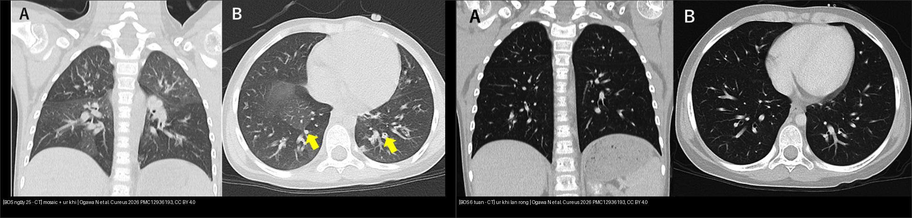
Trái: BOS ngày 25 sau auto-HSCT — mosaic + ứ khí + dày thành phế quản (mũi tên), không kính mờ, không nốt trung tâm tiểu thùy. Phải: BOS 6 tuần — ứ khí lan rộng gần toàn bộ phổi dù đã dùng giãn phế quản + corticoid. Nguồn: Ogawa N et al., Cureus 2026 (PMC12936193), CC BY 4.0. Ảnh ghép letterbox.Đọc chuẩn thì THỞ RA (điểm chốt của cả bài)
- Ứ khí = vùng phổi giảm tỷ trọng KHÔNG nhỏ lại khi thở ra (giữ nguyên thể tích hoặc giảm rất ít so các thùy lành). Trên CT thì thở ra, vùng ứ khí sáng tương phản rõ hơn so với thì hít vào và so nhu mô lành — đây là lý do phải chụp cả 2 thì.
- Cạm bẫy dịch tễ: ứ khí có thể gặp ở tới 20% người khỏe mạnh (một số báo cáo tới 1/2 người khỏe, thường ở đáy phổi phụ thuộc) — nên ứ khí phải đi kèm BỐI CẢNH LÂM SÀNG + tắc nghẽn cố định, không đọc ứ khí đơn độc.
- Trong BOS sau ghép tế bào gốc, X-quang ngực có thể bình thường — X-quang bình thường KHÔNG loại trừ BOS; và chỉ HRCT thì thở ra mới "bắt" được ứ khí sớm.
4. Protocol chụp + hệ phân độ/điểm chuẩn hóa
- Theo dõi chức năng hô hấp (chìa khóa phát hiện sớm):
- Sau chẩn đoán cGVHD: spirometry mỗi 3 tháng trong ≥ 1 năm, sau đó PFT đầy đủ hằng năm (spirometry + thể tích phổi + DLCO), và spirometry/PFT mỗi 3–6 tháng cho tới khi ngưng hẳn ức chế miễn dịch (đồng thuận NIH 2020).
- Giảm FEV₁ ≥ 10% so nền hoặc so mốc ngày 100 → đo lại ngắn hạn sau 2–4 tuần.
- Ở trẻ: FEF25–75 và V25 nhạy hơn FEV₁ cho đường thở nhỏ (ca nguyên văn: FEV₁ 88,2% nhưng V25 chỉ 36% dự đoán); < 8 tuổi có thể không làm được spirometry tin cậy → cân nhắc rửa trôi nhiều nhịp thở (multiple breath washout, MBW)/chỉ số LCI (không vượt trội spirometry ở trẻ ≥ 8 tuổi).
- Protocol CT: HRCT lát mỏng ≤ 1 mm, liều thấp, chụp hít vào (đủ) + THỞ RA (end-expiratory); thêm thì nằm sấp (prone) để loại xẹp phổi phụ thuộc ở đáy sau. Đọc: mosaic, ứ khí, dày thành phế quản, giãn phế quản; định lượng ứ khí/độ đậm đặc phổi (qCT) tăng độ chính xác khi kết hợp với đọc định tính.
- Hệ phân độ/tiêu chuẩn:
- NIH 2014 — chẩn đoán BOS sau HSCT (ở trên); KHÔNG có "độ" BOS trong tiêu chuẩn NIH, nhưng thực hành hay dùng NIH lung score của cGVHD 0–3 (điểm 2–3 là mức nặng — như đoàn hệ 678 bệnh nhân).
- ISHLT 2019 — CLAD: potential ≥ 10%, CLAD > 20%; BOS 0p (FEV₁ 79–90%) và BOS 1 (> 20–35%), BOS 2 (35–50%), BOS 3 (> 50%) theo mức giảm FEV₁.
- Xử trí (khung): tăng/thêm corticoid toàn thân, azithromycin (thể đáp ứng ~10–15%), montelukast (làm chậm tốc độ giảm FEV₁ ở BOS khởi phát muộn độ 1), ruxolitinib/ibrutinib, ly trích quang (extracorporeal photopheresis, ECP) bước 2; ghép phổi là lựa chọn cuối ở BOS nặng. Đáp ứng điều trị rất hạn chế: corticoid bước 1 chỉ 14,3%; ruxolitinib 33,3%; ECP 25%; ibrutinib 25%; imatinib 0%. Pirfenidone (RCT 90 bệnh nhân, 26 tuần, 2403 mg/ngày) KHÔNG vượt placebo trong BOS tiến triển sau ghép phổi.
flowchart TD
A[Trẻ sau ghép tủy hoặc ghép phổi: ho, khò khè, khó thở gắng sức] --> B[Đo spirometry, FEF25-75, V25]
B --> C{FEV1 giảm so với nền}
C -->|Không| Z[Theo dõi mỗi 3 tháng; vẫn chụp CT thì THỞ RA nếu nghi ngờ]
C -->|Có| D[Loại trừ nhiễm trùng và nguyên nhân khác bằng nội soi và BAL]
D --> E[HRCT lát mỏng hít vào cộng THỞ RA: ứ khí, mosaic, dày thành phế quản, giãn phế quản]
E --> F{Sau ghép TỦY: FEV1 dưới 75 phần trăm dự đoán và giảm 10 phần trăm trong 2 năm và có ứ khí thì thở ra}
F -->|Đúng| G[BOS theo NIH 2014]
F -->|Sai| H[Đo lại sau 2 đến 4 tuần; tìm nguyên nhân khác]
E --> I{Sau ghép PHỔI: FEV1 giảm trên 20 phần trăm so nền}
I -->|Đúng| J[CLAD]
I -->|Sai| K[Potential CLAD nếu giảm 10 phần trăm]
J --> L{Thể CLAD}
L -->|Tắc nghẽn, không mờ phổi dai dẳng| M[BOS]
L -->|Hạn chế, TLC giảm 10 phần trăm, mờ phổi dai dẳng| N[RAS]
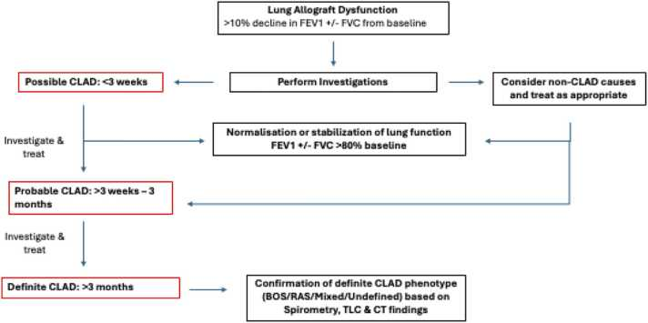
Sơ đồ CLAD sau ghép phổi: rối loạn chức năng mảnh ghép (giảm FEV₁ > 10%) → khảo sát → hồi phục/ổn định, hay tiến triển thành possible (< 3 tuần), probable (≥ 3 tuần) và definite (≥ 3 tháng) CLAD, rồi xác định thể BOS/RAS/hỗn hợp/không xác định. Nguồn: Sepahzad A et al., JHLT Open 2026 (PMC13123590), CC BY 4.0.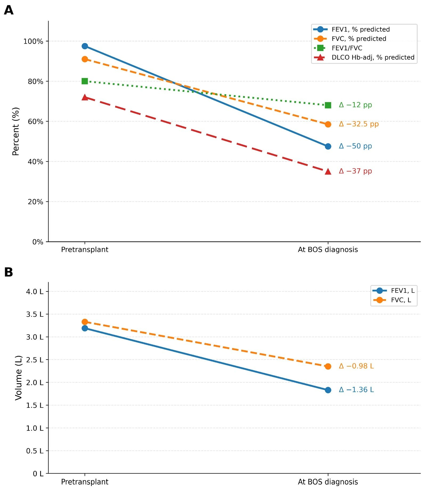
Biểu đồ FEV₁ trước ghép và lúc chẩn đoán BOS trong đoàn hệ 678 bệnh nhân allo-HSCT: FEV₁ trung vị giảm từ 97,5% xuống 47,5% dự đoán. Nguồn: Savaş EM et al., J Clin Med 2026 (PMC13665736), CC BY 4.0.5. Biến thể bình thường và cạm bẫy
- Biến thể bình thường:
- Ứ khí ở người khỏe mạnh (tới 20%, đôi khi tới một nửa) — thường ở đáy phổi phụ thuộc; không gọi BOS nếu không có tắc nghẽn cố định + bối cảnh sau ghép.
- Mosaic do xẹp phổi phụ thuộc ở đáy sau trên phim nằm ngửa — chụp thêm thì nằm sấp để phân biệt.
- Tăng thông khí/giảm tỷ trọng tư thế và giả ảnh do cử động (motion artifact) dễ giả ứ khí.
- Cạm bẫy (pitfall):
- X-quang bình thường KHÔNG loại trừ BOS (X-quang thường không đặc hiệu, có thể chỉ là tăng sáng khu trú/nghèo mạch mơ hồ). Đừng để "phim phổi bình thường" làm trì hoãn chẩn đoán.
- FEV₁ BÌNH THƯỜNG cũng KHÔNG loại trừ BOS sớm — ca nguyên văn có FEV₁ 88,2% dự đoán nhưng V25 36% và đường cong lưu lượng lõm (concave); chỉ số đường thở nhỏ (V25/V50, FEF25–75) mới phát hiện sớm. Ở trẻ, tiêu chuẩn 75% cứng của người lớn không dùng nguyên — dùng LLN theo NHANES III.
- Tiêu chuẩn NIH kém nhạy và kém đặc hiệu: chỉ 52% ca OB đã được chứng minh mô bệnh học thỏa tiêu chuẩn spirometry NIH; ngược lại 24% ca thỏa tiêu chuẩn NIH lại là bệnh nhu mô KHÔNG phải OB (viêm phổi tổ chức, tổn thương phế nang, NSIP).
- Giảm FEV₁ đơn độc chưa đủ: trong 1.325 bệnh nhân "tiền BOS" (FEV₁ giảm 10% và/hoặc FEF25–75 giảm 25%), chỉ 72 ca (5%) tiến triển thành BOS NIH — phần lớn giảm FEV₁ do nguyên nhân khác.
- Auto-HSCT ≠ miễn nhiễm với BOS, và thể này có thể hồi phục (ca nguyên văn khỏi triệu chứng sau 3 tháng, PFT bình thường sau 9 tháng) — khác diễn tiến thường không hồi phục của BOS sau allo-HSCT. KL-6 và SP-D có thể bình thường (ca nguyên văn) → không dùng để loại trừ.
- Sau ghép phổi, mọi tắc nghẽn mới không tự động là BOS — phải loại trừ nhiễm trùng, viêm phổi tổ chức, bệnh nhu mô; và phân biệt BOS (tắc nghẽn) với RAS (hạn chế + mờ phổi dai dẳng) vì tiên lượng rất khác.
- Cẩn thận "mosaic" do mạch (thuyên tắc phổi mạn) và do thâm nhiễm (kính mờ) — cùng hình mosaic nhưng gốc khác; bắt buộc có thì thở ra để chốt.
- Bệnh nhân ghép phổi có PAL/dò khí dai dẳng, giãn phế quản, nhiễm trùng làm phức tạp đọc CT (bài 618) — đừng quy hết cho BOS.
6. Tự lượng giá — Blind Quiz ngay trên trang tĩnh
Ca 1 — Bé gái 5 tuổi, u nguyên bào thần kinh giai đoạn M, sau hóa trị liều cao (thiotepa + melphalan) và ghép tế bào gốc TỰ THÂN (auto-HSCT); mọc mảnh ghép ngày 10, sau đó khó thở + khò khè thì thở ra + SpO₂ giảm về đêm. Cấy và film array hô hấp âm tính toàn bộ. Chụp CT ngày 25.
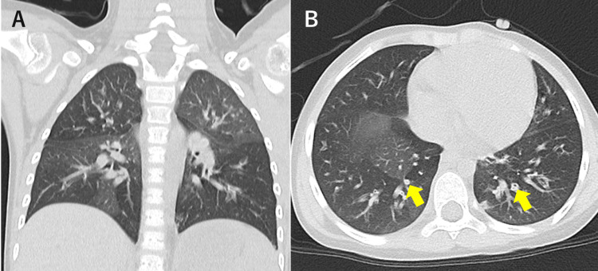
- Gợi ý lâm sàng (clinical context): trẻ sau ghép tủy tự thân, triệu chứng hô hấp xuất hiện ngay sau mọc mảnh ghép, nhiễm trùng âm tính.
- Câu hỏi: Mô tả mẫu hình trên CT? Vì sao nhiễm trùng âm tính là thông tin quan trọng? Ba chẩn đoán phân biệt và dấu hiệu nào chốt?
Bấm để hiện đáp án (findings + chẩn đoán)
- Dấu hiệu (findings): mosaic attenuation (vùng giảm tỷ trọng xen kẽ) + ứ khí + dày thành phế quản (mũi tên); KHÔNG có kính mờ, KHÔNG nốt trung tâm tiểu thùy. Nhiễm trùng âm tính giúp loại trừ viêm tiểu phế quản nhiễm trùng cấp — một tiêu chí của BOS.
- Chẩn đoán (diagnosis): BOS sau ghép tế bào gốc tự thân. Cơ chế: tổn thương biểu mô do hóa trị liều cao + DAMP lúc tái lập miễn dịch → xơ hóa tiểu phế quản → ứ khí. Đối chiếu đường cong lưu lượng bên dưới.
- Nguồn ảnh: Ogawa N et al., Cureus 2026 (PMC12936193), CC BY 4.0.
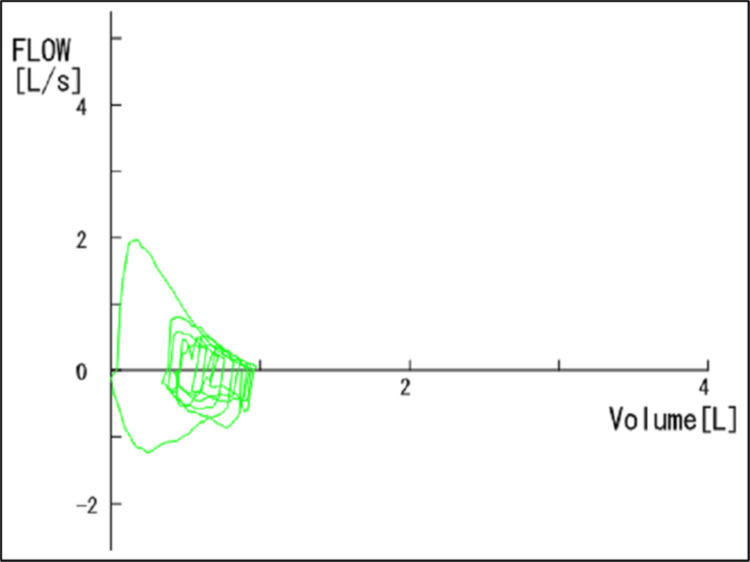
- Bổ sung: đường cong lưu lượng lõm (concave) = tắc nghẽn đường thở nhỏ ngoại vi; V25 = 0,33 L/s = 36% dự đoán trong khi FEV₁ = 88,2% (bình thường!). Đây là cạm bẫy lớn: FEV₁ bình thường KHÔNG loại trừ BOS.
- Nguồn ảnh: Ogawa N et al., Cureus 2026 (PMC12936193), CC BY 4.0.
Ca 2 — Cùng bệnh nhân, 6 tuần sau khởi phát, triệu chứng vẫn tiến triển dù đã dùng giãn phế quản hít + montelukast + prednisolone 2 mg/kg mỗi 8 giờ.
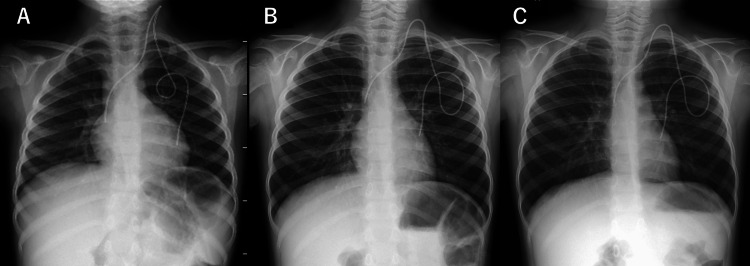
- Gợi ý: so sánh 3 mốc thời gian trên phim (trước khởi phát, 2 tuần, 6 tuần).
- Câu hỏi: Đặc điểm X-quang gì xuất hiện/tiến triển? Điều này gợi ý gì về sinh lý phổi?
Bấm để hiện đáp án
- Dấu hiệu: tăng sáng phổi (hyperlucency) + cơ hoành dẹt + lồng ngực hình thùng (barrel-shaped) + bóng tim hẹp — hình thái tăng thể tích phổi do ứ khí; tiến triển thêm sau 6 tuần.
- Ý nghĩa: cơ chế van một chiều ở tiểu phế quản → khí ứ lại → tăng thể tích phổi (hyperinflation); đây là dấu hiệu muộn/thô trên X-quang.
- Nguồn ảnh: Ogawa N et al., Cureus 2026 (PMC12936193), CC BY 4.0.
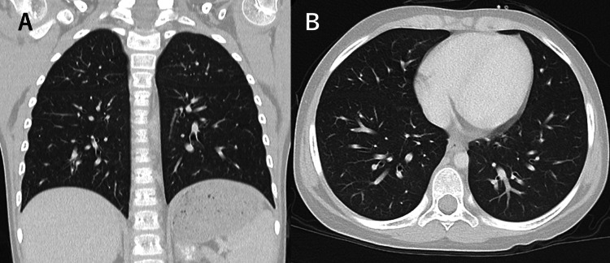
- Bổ sung: ứ khí lan rộng gần toàn bộ phổi so với CT ngày 25 → xác nhận BOS tiến triển. Sau đó bệnh nhân được methylprednisolone xung 30 mg/kg/ngày × 3 ngày mỗi tháng + IVIG + corticoid hít + azithromycin; 3 tháng sau hết triệu chứng, V25 trở về 160% dự đoán, ngưng oxy; 9 tháng sau không triệu chứng và các chỉ số bình thường.
- Nguồn ảnh: Ogawa N et al., Cureus 2026 (PMC12936193), CC BY 4.0.
Ca 3 — Bệnh nhân sau ghép tủy, ho mạn, FEV₁ giảm; CT hít vào (a) và THỞ RA (b).
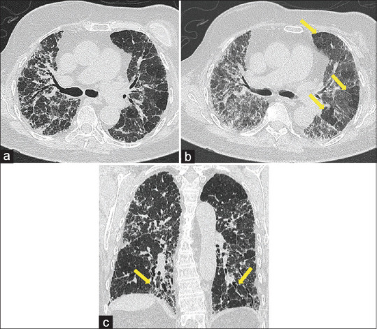
- Gợi ý: chú ý các mũi tên vàng chỉ các ổ giảm tỷ trọng chỉ lộ rõ ở thì (b).
- Câu hỏi: Vì sao phải chụp thì THỞ RA? Cơ chế và cách phân biệt với mosaic do mạch máu?
Bấm để hiện đáp án
- Dấu hiệu: thì hít vào (a) mosaic mờ nhạt; thì THỞ RA (b) các vùng giảm tỷ trọng dạng tiểu thùy KHÔNG nhỏ lại (mũi tên) = ứ khí (air trapping); (c) coronal xác nhận nhiều ổ.
- Cơ chế/chốt: ứ khí là dấu hiệu gián tiếp của bệnh tiểu phế quản (ổng < 2 mm dưới ngưỡng phân giải CT). Vùng ứ khí tệ hơn khi thở ra, còn mosaic do bệnh mạch máu phổi giữ nguyên cả 2 thì (khí đầy nhưng thưa mạch). Nên luôn chụp cả 2 thì.
- Nguồn ảnh: Lee ECH et al., Singapore Med J 2026 (PMC13405576), CC BY-NC-ND 4.0 — nguyên bản, không chỉnh sửa.
Ca 4 — Bệnh nhân trẻ sau ghép tủy: HRCT trước và sau ghép phổi + mô bệnh.
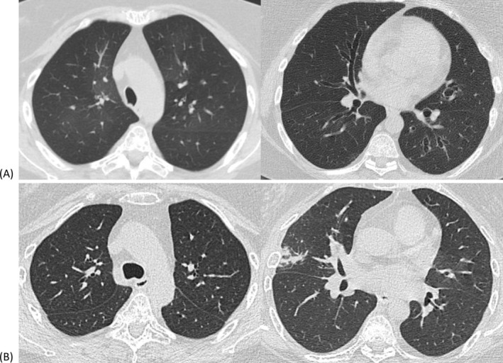
- Gợi ý: Hình trên và dưới là hai thời điểm chụp khác nhau; đối chiếu với bệnh phẩm mô học bên dưới.
- Câu hỏi: 3 chẩn đoán phân biệt cho bệnh cảnh tắc nghẽn tiến triển sau ghép? Mô bệnh học xác nhận gì?
Bấm để hiện đáp án
- Chẩn đoán: BOS/CLAD thể BOS sau ghép tế bào gốc (mô bệnh = viêm–xơ tiểu phế quản), sau đó ghép phổi hai bên vì bệnh nặng (BODE index 7). Sau ghép 3 tháng chức năng phổi cải thiện rõ và ổn định ~5 năm.
- Phân biệt: BOS do cGVHD; viêm phổi tổ chức/nhiễm trùng; CLAD thể RAS (nếu có mờ phổi dai dẳng + giảm thể tích).
- Nguồn ảnh: Huang SW et al., Respirol Case Rep 2025 (PMC11893176), CC BY-NC-ND 4.0 — nguyên bản, không ghép/chỉnh sửa.
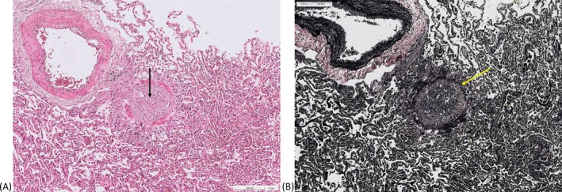
- Mô bệnh: thành tiểu phế quản viêm nhẹ–vừa và xơ hóa làm hẹp/tắc lòng — tương ứng tổn thương OB; đây là bằng chứng mô học, không thay đổi nguyên tắc chẩn đoán lâm sàng–hình ảnh.
- Nguồn ảnh: Huang SW et al., Respirol Case Rep 2025 (PMC11893176), CC BY-NC-ND 4.0 — nguyên bản.
Ca 5 — Bệnh nhân sau ghép tủy, CT có dày thành phế quản và ổ giảm tỷ trọng; chẩn đoán hướng tới BOS do bệnh mảnh ghép chống chủ.
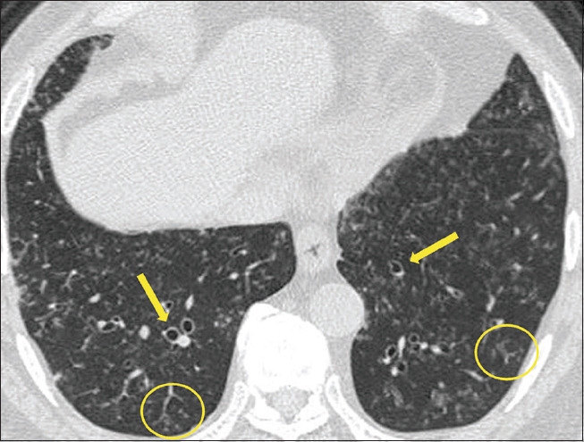
- Gợi ý: Bệnh nhân 68 tuổi (người lớn) ghép tủy 1 năm trước, ho + sốt; chú ý dày thành phế quản nhẹ và các ổ giảm tỷ trọng.
- Câu hỏi: Dấu hiệu chốt hướng tới viêm tiểu phế quản/BOS là gì? Vì sao cần loại trừ nhiễm trùng trước khi chốt BOS?
Bấm để hiện đáp án
- Dấu hiệu: dày thành phế quản nhẹ + mosaic/ứ khí ở bệnh nhân sau ghép tủy — phù hợp viêm tiểu phế quản tắc nghẽn do mảnh ghép chống chủ; thì thở ra giúp xác nhận ứ khí.
- Vì sao loại trừ nhiễm trùng: nhiễm trùng hoạt động là tiêu chí LOẠI TRỪ trong định nghĩa NIH 2014; nhiễm trùng cũng có thể để lại ứ khí/dày thành phế quản nên phải chẩn đoán bằng BAL/nội soi.
- Nguồn ảnh: Lee ECH et al., Singapore Med J 2026 (PMC13405576), CC BY-NC-ND 4.0 — nguyên bản.
Ca 6 — Trẻ sau ghép tế bào gốc, sàng lọc phát hiện FEV₁ giảm; nhưng cần cẩn thận không "kết luận sớm" từ một lần đo.
- Câu hỏi: Ngưỡng giảm FEV₁ nào buộc đo lại sau 2–4 tuần? Khi nào đủ để gọi CLAD tiềm tàng vs CLAD xác định?
Bấm để hiện đáp án
- Giảm FEV₁ ≥ 10% so nền/so ngày 100 → đo lại sau 2–4 tuần (đồng thuận NIH 2020).
- CLAD tiềm tàng = FEV₁ giảm ≥ 10%; CLAD xác định = giảm > 20% so nền (trung bình 2 giá trị tốt nhất cách ≥ 3 tuần) và kéo dài ≥ 3 tháng (probable ≥ 3 tuần). Với HSCT: BOS = FEV₁ < 75% + giảm ≥ 10% trong 2 năm + ứ khí thì thở ra + không nhiễm trùng.
- Nguồn: Cheng GS et al., Am J Respir Crit Care Med 2025 (PMC12412426), CC BY-NC-ND 4.0; Sepahzad A et al., JHLT Open 2026 (PMC13123590), CC BY 4.0.
Bài liên quan chéo
- 614 – Bệnh tiểu phế quản tắc nghẽn (BO) hậu nhiễm trùng & Swyer–James
- 669 – Theo dõi dài hạn BO hậu nhiễm trùng & Swyer–James ở trẻ
- 613 – Viêm tiểu phế quản ở nhũ nhi (RSV)
- 617 – Hội chứng rò khí ở nhũ nhi (tràn khí màng phổi & trung thất)
- 618 – Rò phế quản–màng phổi & rò khí dai dẳng ở trẻ
- 619 – Di chứng hô hấp sau hoại tử phổi & cắt thùy ở trẻ
- 600 – Tổng quan Hệ Nhi khoa
- 070 – PE & ĐMC cấp (mosaic do mạch máu phổi)
- 035 – Xơ mô kẽ UIP vs NSIP (mosaic do kính mờ)
Ảnh
- Tên file:
670_slug_Modality_SourceID.jpg. Nguồn + giấy phép từng ảnh trongimages/CREDITS.md. - Ảnh CC BY-NC-ND (PMC11893176, PMC12412426, PMC13405576) giữ nguyên bản, KHÔNG crop/ghép.
- Không tải được: các ca sau ghép tủy trên Radiopaedia/AuntMinnie — chỉ dẫn link ở
sources.md.
Không dùng để chẩn đoán độc lập khi chưa có người hướng dẫn.